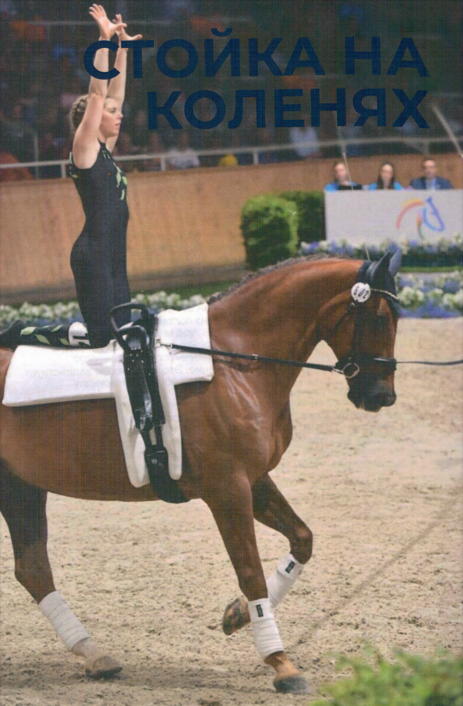

Нажмите на фото, чтобы увеличить
Из положения седа лицом вперед вольтижер плавно переходит в положение на коленях обеими ногами одновременно. Голени располагаются плоско на паде, параллельно позвоночнику лошади, на ширине бёдер. Носки должны быть натянуты, а вес равномерно распределен от колен до носков.
Когда вольтижер принимает положение стойки на коленях, обе ручки гурты одновременно отпускаются. Это положение тела создает вертикальную линию, проходящую от плеча до бедра, которое синхронизируется с движением лошади. Плечи должны находиться на одной линии с линией плеча лошади. Движение галопа поглощается ногами и верхней частью тела.
Руки немедленно вытягиваются и могут быть разведены в стороны или вперёд, в зависимости от национальных правил.
По завершении этого движения вольтижер одновременно берётся за ручки гурты обеими руками. На протяжении всего этого перехода вольтижер должен держать голову поднятой, глядя вперёд, плавно переходя в положение седа лицом вперёд с прямыми ногами.